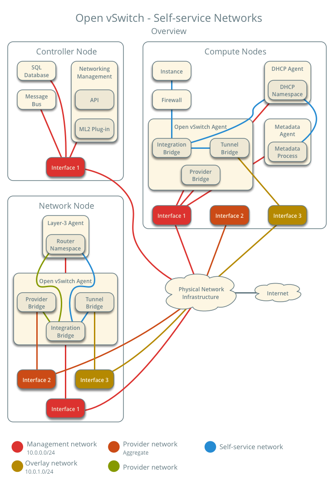
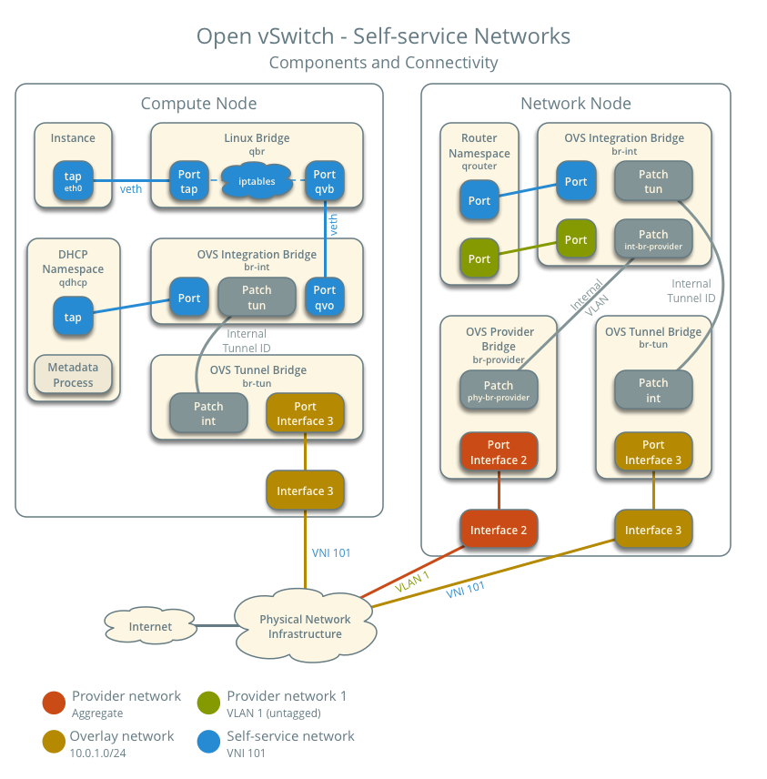
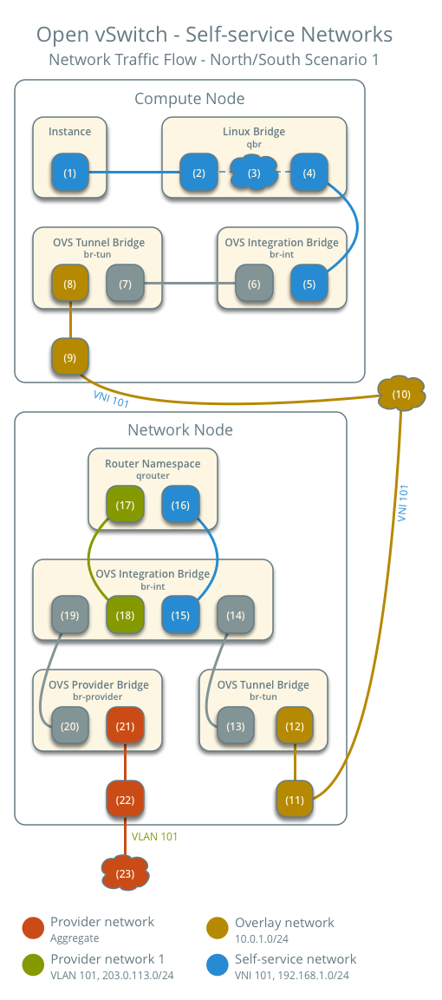
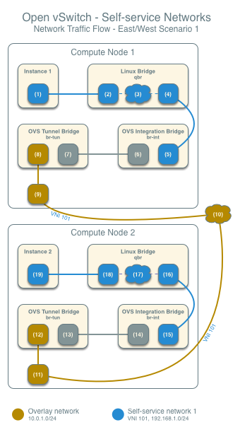
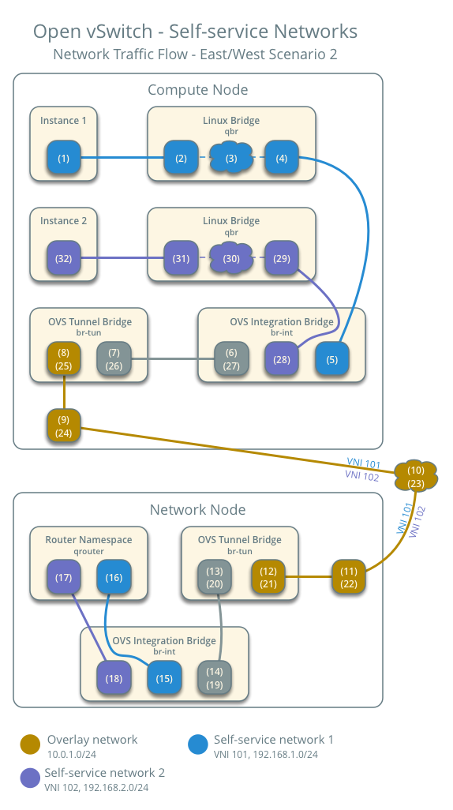

Open vSwitch: Self-service networks¶
This architecture example augments Open vSwitch: Provider networks to support a nearly limitless quantity of entirely virtual networks. Although the Networking service supports VLAN self-service networks, this example focuses on VXLAN self-service networks. For more information on self-service networks, see Self-service networks.
Prerequisites¶
Add one network node with the following components:
Three network interfaces: management, provider, and overlay.
OpenStack Networking Open vSwitch (OVS) layer-2 agent, layer-3 agent, and any including OVS.
Modify the compute nodes with the following components:
Add one network interface: overlay.
Note
You can keep the DHCP and metadata agents on each compute node or move them to the network node.
Architecture¶

The following figure shows components and connectivity for one self-service network and one untagged (flat) provider network. In this particular case, the instance resides on the same compute node as the DHCP agent for the network. If the DHCP agent resides on another compute node, the latter only contains a DHCP namespace and with a port on the OVS integration bridge.

Example configuration¶
Use the following example configuration as a template to add support for self-service networks to an existing operational environment that supports provider networks.
Controller node¶
In the
neutron.conffile:Enable routing and allow overlapping IP address ranges.
[DEFAULT] service_plugins = router
In the
ml2_conf.inifile:Add
vxlanto type drivers and project network types.[ml2] type_drivers = flat,vlan,vxlan tenant_network_types = vxlan
Enable the layer-2 population mechanism driver.
[ml2] mechanism_drivers = openvswitch,l2population
Configure the VXLAN network ID (VNI) range.
[ml2_type_vxlan] vni_ranges = VNI_START:VNI_END
Replace
VNI_STARTandVNI_ENDwith appropriate numerical values.
Restart the following services:
Neutron Server
Open vSwitch agent
Network node¶
Install the Networking service OVS layer-2 agent and layer-3 agent.
Install OVS.
In the
neutron.conffile, configure common options:[DEFAULT] core_plugin = ml2 auth_strategy = keystone [database] # ... [keystone_authtoken] # ... [nova] # ... [agent] # ...
See the Installation Tutorials and Guides and Configuration Reference for your OpenStack release to obtain the appropriate additional configuration for the
[DEFAULT],[database],[keystone_authtoken],[nova], and[agent]sections.Start the following services:
OVS
Create the OVS provider bridge
br-provider:$ ovs-vsctl add-br br-provider
Add the provider network interface as a port on the OVS provider bridge
br-provider:$ ovs-vsctl add-port br-provider PROVIDER_INTERFACE
Replace
PROVIDER_INTERFACEwith the name of the underlying interface that handles provider networks. For example,eth1.In the
openvswitch_agent.inifile, configure the layer-2 agent.[ovs] bridge_mappings = provider:br-provider local_ip = OVERLAY_INTERFACE_IP_ADDRESS [agent] tunnel_types = vxlan l2_population = True [securitygroup] firewall_driver = iptables_hybrid
Replace
OVERLAY_INTERFACE_IP_ADDRESSwith the IP address of the interface that handles VXLAN overlays for self-service networks.Start the following services:
Open vSwitch agent
Layer-3 agent
Compute nodes¶
In the
openvswitch_agent.inifile, enable VXLAN support including layer-2 population.[ovs] local_ip = OVERLAY_INTERFACE_IP_ADDRESS [agent] tunnel_types = vxlan l2_population = True
Replace
OVERLAY_INTERFACE_IP_ADDRESSwith the IP address of the interface that handles VXLAN overlays for self-service networks.Restart the following services:
Open vSwitch agent
Verify service operation¶
Source the administrative project credentials.
Verify presence and operation of the agents.
$ openstack network agent list +--------------------------------------+--------------------+----------+-------------------+-------+-------+---------------------------+ | ID | Agent Type | Host | Availability Zone | Alive | State | Binary | +--------------------------------------+--------------------+----------+-------------------+-------+-------+---------------------------+ | 1236bbcb-e0ba-48a9-80fc-81202ca4fa51 | Metadata agent | compute2 | None | True | UP | neutron-metadata-agent | | 457d6898-b373-4bb3-b41f-59345dcfb5c5 | Open vSwitch agent | compute2 | None | True | UP | neutron-openvswitch-agent | | 71f15e84-bc47-4c2a-b9fb-317840b2d753 | DHCP agent | compute2 | nova | True | UP | neutron-dhcp-agent | | 8805b962-de95-4e40-bdc2-7a0add7521e8 | L3 agent | network1 | nova | True | UP | neutron-l3-agent | | a33cac5a-0266-48f6-9cac-4cef4f8b0358 | Open vSwitch agent | network1 | None | True | UP | neutron-openvswitch-agent | | a6c69690-e7f7-4e56-9831-1282753e5007 | Metadata agent | compute1 | None | True | UP | neutron-metadata-agent | | af11f22f-a9f4-404f-9fd8-cd7ad55c0f68 | DHCP agent | compute1 | nova | True | UP | neutron-dhcp-agent | | bcfc977b-ec0e-4ba9-be62-9489b4b0e6f1 | Open vSwitch agent | compute1 | None | True | UP | neutron-openvswitch-agent | +--------------------------------------+--------------------+----------+-------------------+-------+-------+---------------------------+
Create initial networks¶
The configuration supports multiple VXLAN self-service networks. For simplicity, the following procedure creates one self-service network and a router with a gateway on the flat provider network. The router uses NAT for IPv4 network traffic and directly routes IPv6 network traffic.
Note
IPv6 connectivity with self-service networks often requires addition of static routes to nodes and physical network infrastructure.
Source the administrative project credentials.
Update the provider network to support external connectivity for self-service networks.
$ openstack network set --external provider1
Note
This command provides no output.
Source a regular (non-administrative) project credentials.
Create a self-service network.
$ openstack network create selfservice1 +-------------------------+--------------+ | Field | Value | +-------------------------+--------------+ | admin_state_up | UP | | mtu | 1450 | | name | selfservice1 | | port_security_enabled | True | | router:external | Internal | | shared | False | | status | ACTIVE | +-------------------------+--------------+
Note
If you are using an MTU value on your network below 1280, please read the warning listed in the IPv6 configuration guide before creating any subnets.
Create a IPv4 subnet on the self-service network.
$ openstack subnet create --subnet-range 192.0.2.0/24 \ --network selfservice1 --dns-nameserver 8.8.4.4 selfservice1-v4 +-------------------+---------------------------+ | Field | Value | +-------------------+---------------------------+ | allocation_pools | 192.0.2.2-192.0.2.254 | | cidr | 192.0.2.0/24 | | dns_nameservers | 8.8.4.4 | | enable_dhcp | True | | gateway_ip | 192.0.2.1 | | ip_version | 4 | | name | selfservice1-v4 | +-------------------+---------------------------+
Create a IPv6 subnet on the self-service network.
$ openstack subnet create --subnet-range fd00:192:0:2::/64 \ --ip-version 6 --ipv6-ra-mode slaac --ipv6-address-mode slaac \ --network selfservice1 --dns-nameserver 2001:4860:4860::8844 \ selfservice1-v6 +-------------------+--------------------------------------------------+ | Field | Value | +-------------------+--------------------------------------------------+ | allocation_pools | fd00:192:0:2::2-fd00:192:0:2:ffff:ffff:ffff:ffff | | cidr | fd00:192:0:2::/64 | | dns_nameservers | 2001:4860:4860::8844 | | enable_dhcp | True | | gateway_ip | fd00:192:0:2::1 | | ip_version | 6 | | ipv6_address_mode | slaac | | ipv6_ra_mode | slaac | | name | selfservice1-v6 | +-------------------+--------------------------------------------------+
Create a router.
$ openstack router create router1 +-----------------------+---------+ | Field | Value | +-----------------------+---------+ | admin_state_up | UP | | name | router1 | | status | ACTIVE | +-----------------------+---------+
Add the IPv4 and IPv6 subnets as interfaces on the router.
$ openstack router add subnet router1 selfservice1-v4 $ openstack router add subnet router1 selfservice1-v6
Note
These commands provide no output.
Add the provider network as the gateway on the router.
$ openstack router set --external-gateway provider1 router1
Verify network operation¶
On each compute node, verify creation of a second
qdhcpnamespace.# ip netns qdhcp-8b868082-e312-4110-8627-298109d4401c qdhcp-8fbc13ca-cfe0-4b8a-993b-e33f37ba66d1
On the network node, verify creation of the
qrouternamespace.# ip netns qrouter-17db2a15-e024-46d0-9250-4cd4d336a2cc
Source a regular (non-administrative) project credentials.
Create the appropriate security group rules to allow
pingand SSH access instances using the network.$ openstack security group rule create --proto icmp default +------------------+-----------+ | Field | Value | +------------------+-----------+ | direction | ingress | | ethertype | IPv4 | | protocol | icmp | | remote_ip_prefix | 0.0.0.0/0 | +------------------+-----------+ $ openstack security group rule create --ethertype IPv6 \ --proto ipv6-icmp default +-----------+-----------+ | Field | Value | +-----------+-----------+ | direction | ingress | | ethertype | IPv6 | | protocol | ipv6-icmp | +-----------+-----------+ $ openstack security group rule create --proto tcp --dst-port 22 default +------------------+-----------+ | Field | Value | +------------------+-----------+ | direction | ingress | | ethertype | IPv4 | | port_range_max | 22 | | port_range_min | 22 | | protocol | tcp | | remote_ip_prefix | 0.0.0.0/0 | +------------------+-----------+ $ openstack security group rule create --ethertype IPv6 --proto tcp \ --dst-port 22 default +----------------+---------+ | Field | Value | +----------------+---------+ | direction | ingress | | ethertype | IPv6 | | port_range_max | 22 | | port_range_min | 22 | | protocol | tcp | +----------------+---------+
Launch an instance with an interface on the self-service network. For example, a CirrOS image using flavor ID 1.
$ openstack server create --flavor 1 --image cirros --nic net-id=NETWORK_ID selfservice-instance1
Replace
NETWORK_IDwith the ID of the self-service network.Determine the IPv4 and IPv6 addresses of the instance.
$ openstack server list +--------------------------------------+-----------------------+--------+----------------------------------------------------------+--------+---------+ | ID | Name | Status | Networks | Image | Flavor | +--------------------------------------+-----------------------+--------+----------------------------------------------------------+--------+---------+ | c055cdb0-ebb4-4d65-957c-35cbdbd59306 | selfservice-instance1 | ACTIVE | selfservice1=192.0.2.4, fd00:192:0:2:f816:3eff:fe30:9cb0 | cirros | m1.tiny | +--------------------------------------+-----------------------+--------+----------------------------------------------------------+--------+---------+
Warning
The IPv4 address resides in a private IP address range (RFC1918). Thus, the Networking service performs source network address translation (SNAT) for the instance to access external networks such as the Internet. Access from external networks such as the Internet to the instance requires a floating IPv4 address. The Networking service performs destination network address translation (DNAT) from the floating IPv4 address to the instance IPv4 address on the self-service network. On the other hand, the Networking service architecture for IPv6 lacks support for NAT due to the significantly larger address space and complexity of NAT. Thus, floating IP addresses do not exist for IPv6 and the Networking service only performs routing for IPv6 subnets on self-service networks. In other words, you cannot rely on NAT to “hide” instances with IPv4 and IPv6 addresses or only IPv6 addresses and must properly implement security groups to restrict access.
On the controller node or any host with access to the provider network,
pingthe IPv6 address of the instance.$ ping6 -c 4 fd00:192:0:2:f816:3eff:fe30:9cb0 PING fd00:192:0:2:f816:3eff:fe30:9cb0(fd00:192:0:2:f816:3eff:fe30:9cb0) 56 data bytes 64 bytes from fd00:192:0:2:f816:3eff:fe30:9cb0: icmp_seq=1 ttl=63 time=2.08 ms 64 bytes from fd00:192:0:2:f816:3eff:fe30:9cb0: icmp_seq=2 ttl=63 time=1.88 ms 64 bytes from fd00:192:0:2:f816:3eff:fe30:9cb0: icmp_seq=3 ttl=63 time=1.55 ms 64 bytes from fd00:192:0:2:f816:3eff:fe30:9cb0: icmp_seq=4 ttl=63 time=1.62 ms --- fd00:192:0:2:f816:3eff:fe30:9cb0 ping statistics --- 4 packets transmitted, 4 received, 0% packet loss, time 3004ms rtt min/avg/max/mdev = 1.557/1.788/2.085/0.217 ms
Optionally, enable IPv4 access from external networks such as the Internet to the instance.
Create a floating IPv4 address on the provider network.
$ openstack floating ip create provider1 +-------------+--------------------------------------+ | Field | Value | +-------------+--------------------------------------+ | fixed_ip | None | | id | 22a1b088-5c9b-43b4-97f3-970ce5df77f2 | | instance_id | None | | ip | 203.0.113.16 | | pool | provider1 | +-------------+--------------------------------------+
Associate the floating IPv4 address with the instance.
$ openstack server add floating ip selfservice-instance1 203.0.113.16
Note
This command provides no output.
On the controller node or any host with access to the provider network,
pingthe floating IPv4 address of the instance.$ ping -c 4 203.0.113.16 PING 203.0.113.16 (203.0.113.16) 56(84) bytes of data. 64 bytes from 203.0.113.16: icmp_seq=1 ttl=63 time=3.41 ms 64 bytes from 203.0.113.16: icmp_seq=2 ttl=63 time=1.67 ms 64 bytes from 203.0.113.16: icmp_seq=3 ttl=63 time=1.47 ms 64 bytes from 203.0.113.16: icmp_seq=4 ttl=63 time=1.59 ms --- 203.0.113.16 ping statistics --- 4 packets transmitted, 4 received, 0% packet loss, time 3005ms rtt min/avg/max/mdev = 1.473/2.040/3.414/0.798 ms
Obtain access to the instance.
Test IPv4 and IPv6 connectivity to the Internet or other external network.
Network traffic flow¶
The following sections describe the flow of network traffic in several common scenarios. North-south network traffic travels between an instance and external network such as the Internet. East-west network traffic travels between instances on the same or different networks. In all scenarios, the physical network infrastructure handles switching and routing among provider networks and external networks such as the Internet. Each case references one or more of the following components:
Provider network (VLAN)
VLAN ID 101 (tagged)
Self-service network 1 (VXLAN)
VXLAN ID (VNI) 101
Self-service network 2 (VXLAN)
VXLAN ID (VNI) 102
Self-service router
Gateway on the provider network
Interface on self-service network 1
Interface on self-service network 2
Instance 1
Instance 2
North-south scenario 1: Instance with a fixed IP address¶
For instances with a fixed IPv4 address, the network node performs SNAT on north-south traffic passing from self-service to external networks such as the Internet. For instances with a fixed IPv6 address, the network node performs conventional routing of traffic between self-service and external networks.
The instance resides on compute node 1 and uses self-service network 1.
The instance sends a packet to a host on the Internet.
The following steps involve compute node 1:
The instance interface (1) forwards the packet to the security group bridge instance port (2) via
vethpair.Security group rules (3) on the security group bridge handle firewalling and connection tracking for the packet.
The security group bridge OVS port (4) forwards the packet to the OVS integration bridge security group port (5) via
vethpair.The OVS integration bridge adds an internal VLAN tag to the packet.
The OVS integration bridge exchanges the internal VLAN tag for an internal tunnel ID.
The OVS integration bridge patch port (6) forwards the packet to the OVS tunnel bridge patch port (7).
The OVS tunnel bridge (8) wraps the packet using VNI 101.
The underlying physical interface (9) for overlay networks forwards the packet to the network node via the overlay network (10).
The following steps involve the network node:
The underlying physical interface (11) for overlay networks forwards the packet to the OVS tunnel bridge (12).
The OVS tunnel bridge unwraps the packet and adds an internal tunnel ID to it.
The OVS tunnel bridge exchanges the internal tunnel ID for an internal VLAN tag.
The OVS tunnel bridge patch port (13) forwards the packet to the OVS integration bridge patch port (14).
The OVS integration bridge port for the self-service network (15) removes the internal VLAN tag and forwards the packet to the self-service network interface (16) in the router namespace.
For IPv4, the router performs SNAT on the packet which changes the source IP address to the router IP address on the provider network and sends it to the gateway IP address on the provider network via the gateway interface on the provider network (17).
For IPv6, the router sends the packet to the next-hop IP address, typically the gateway IP address on the provider network, via the provider gateway interface (17).
The router forwards the packet to the OVS integration bridge port for the provider network (18).
The OVS integration bridge adds the internal VLAN tag to the packet.
The OVS integration bridge
int-br-providerpatch port (19) forwards the packet to the OVS provider bridgephy-br-providerpatch port (20).The OVS provider bridge swaps the internal VLAN tag with actual VLAN tag 101.
The OVS provider bridge provider network port (21) forwards the packet to the physical network interface (22).
The physical network interface forwards the packet to the Internet via physical network infrastructure (23).
Note
Return traffic follows similar steps in reverse. However, without a floating IPv4 address, hosts on the provider or external networks cannot originate connections to instances on the self-service network.

North-south scenario 2: Instance with a floating IPv4 address¶
For instances with a floating IPv4 address, the network node performs SNAT on north-south traffic passing from the instance to external networks such as the Internet and DNAT on north-south traffic passing from external networks to the instance. Floating IP addresses and NAT do not apply to IPv6. Thus, the network node routes IPv6 traffic in this scenario.
The instance resides on compute node 1 and uses self-service network 1.
A host on the Internet sends a packet to the instance.
The following steps involve the network node:
The physical network infrastructure (1) forwards the packet to the provider physical network interface (2).
The provider physical network interface forwards the packet to the OVS provider bridge provider network port (3).
The OVS provider bridge swaps actual VLAN tag 101 with the internal VLAN tag.
The OVS provider bridge
phy-br-providerport (4) forwards the packet to the OVS integration bridgeint-br-providerport (5).The OVS integration bridge port for the provider network (6) removes the internal VLAN tag and forwards the packet to the provider network interface (6) in the router namespace.
For IPv4, the router performs DNAT on the packet which changes the destination IP address to the instance IP address on the self-service network and sends it to the gateway IP address on the self-service network via the self-service interface (7).
For IPv6, the router sends the packet to the next-hop IP address, typically the gateway IP address on the self-service network, via the self-service interface (8).
The router forwards the packet to the OVS integration bridge port for the self-service network (9).
The OVS integration bridge adds an internal VLAN tag to the packet.
The OVS integration bridge exchanges the internal VLAN tag for an internal tunnel ID.
The OVS integration bridge
patch-tunpatch port (10) forwards the packet to the OVS tunnel bridgepatch-intpatch port (11).The OVS tunnel bridge (12) wraps the packet using VNI 101.
The underlying physical interface (13) for overlay networks forwards the packet to the network node via the overlay network (14).
The following steps involve the compute node:
The underlying physical interface (15) for overlay networks forwards the packet to the OVS tunnel bridge (16).
The OVS tunnel bridge unwraps the packet and adds an internal tunnel ID to it.
The OVS tunnel bridge exchanges the internal tunnel ID for an internal VLAN tag.
The OVS tunnel bridge
patch-intpatch port (17) forwards the packet to the OVS integration bridgepatch-tunpatch port (18).The OVS integration bridge removes the internal VLAN tag from the packet.
The OVS integration bridge security group port (19) forwards the packet to the security group bridge OVS port (20) via
vethpair.Security group rules (21) on the security group bridge handle firewalling and connection tracking for the packet.
The security group bridge instance port (22) forwards the packet to the instance interface (23) via
vethpair.
Note
Egress instance traffic flows similar to north-south scenario 1, except SNAT changes the source IP address of the packet to the floating IPv4 address rather than the router IP address on the provider network.
East-west scenario 1: Instances on the same network¶
Instances with a fixed IPv4/IPv6 address or floating IPv4 address on the same network communicate directly between compute nodes containing those instances.
By default, the VXLAN protocol lacks knowledge of target location and uses multicast to discover it. After discovery, it stores the location in the local forwarding database. In large deployments, the discovery process can generate a significant amount of network that all nodes must process. To eliminate the latter and generally increase efficiency, the Networking service includes the layer-2 population mechanism driver that automatically populates the forwarding database for VXLAN interfaces. The example configuration enables this driver. For more information, see ML2 Plug-in.
Instance 1 resides on compute node 1 and uses self-service network 1.
Instance 2 resides on compute node 2 and uses self-service network 1.
Instance 1 sends a packet to instance 2.
The following steps involve compute node 1:
The instance 1 interface (1) forwards the packet to the security group bridge instance port (2) via
vethpair.Security group rules (3) on the security group bridge handle firewalling and connection tracking for the packet.
The security group bridge OVS port (4) forwards the packet to the OVS integration bridge security group port (5) via
vethpair.The OVS integration bridge adds an internal VLAN tag to the packet.
The OVS integration bridge exchanges the internal VLAN tag for an internal tunnel ID.
The OVS integration bridge patch port (6) forwards the packet to the OVS tunnel bridge patch port (7).
The OVS tunnel bridge (8) wraps the packet using VNI 101.
The underlying physical interface (9) for overlay networks forwards the packet to compute node 2 via the overlay network (10).
The following steps involve compute node 2:
The underlying physical interface (11) for overlay networks forwards the packet to the OVS tunnel bridge (12).
The OVS tunnel bridge unwraps the packet and adds an internal tunnel ID to it.
The OVS tunnel bridge exchanges the internal tunnel ID for an internal VLAN tag.
The OVS tunnel bridge
patch-intpatch port (13) forwards the packet to the OVS integration bridgepatch-tunpatch port (14).The OVS integration bridge removes the internal VLAN tag from the packet.
The OVS integration bridge security group port (15) forwards the packet to the security group bridge OVS port (16) via
vethpair.Security group rules (17) on the security group bridge handle firewalling and connection tracking for the packet.
The security group bridge instance port (18) forwards the packet to the instance 2 interface (19) via
vethpair.

Note
Return traffic follows similar steps in reverse.
East-west scenario 2: Instances on different networks¶
Instances using a fixed IPv4/IPv6 address or floating IPv4 address communicate via router on the network node. The self-service networks must reside on the same router.
Instance 1 resides on compute node 1 and uses self-service network 1.
Instance 2 resides on compute node 1 and uses self-service network 2.
Instance 1 sends a packet to instance 2.
Note
Both instances reside on the same compute node to illustrate how VXLAN enables multiple overlays to use the same layer-3 network.
The following steps involve the compute node:
The instance interface (1) forwards the packet to the security group bridge instance port (2) via
vethpair.Security group rules (3) on the security group bridge handle firewalling and connection tracking for the packet.
The security group bridge OVS port (4) forwards the packet to the OVS integration bridge security group port (5) via
vethpair.The OVS integration bridge adds an internal VLAN tag to the packet.
The OVS integration bridge exchanges the internal VLAN tag for an internal tunnel ID.
The OVS integration bridge
patch-tunpatch port (6) forwards the packet to the OVS tunnel bridgepatch-intpatch port (7).The OVS tunnel bridge (8) wraps the packet using VNI 101.
The underlying physical interface (9) for overlay networks forwards the packet to the network node via the overlay network (10).
The following steps involve the network node:
The underlying physical interface (11) for overlay networks forwards the packet to the OVS tunnel bridge (12).
The OVS tunnel bridge unwraps the packet and adds an internal tunnel ID to it.
The OVS tunnel bridge exchanges the internal tunnel ID for an internal VLAN tag.
The OVS tunnel bridge
patch-intpatch port (13) forwards the packet to the OVS integration bridgepatch-tunpatch port (14).The OVS integration bridge port for self-service network 1 (15) removes the internal VLAN tag and forwards the packet to the self-service network 1 interface (16) in the router namespace.
The router sends the packet to the next-hop IP address, typically the gateway IP address on self-service network 2, via the self-service network 2 interface (17).
The router forwards the packet to the OVS integration bridge port for self-service network 2 (18).
The OVS integration bridge adds the internal VLAN tag to the packet.
The OVS integration bridge exchanges the internal VLAN tag for an internal tunnel ID.
The OVS integration bridge
patch-tunpatch port (19) forwards the packet to the OVS tunnel bridgepatch-intpatch port (20).The OVS tunnel bridge (21) wraps the packet using VNI 102.
The underlying physical interface (22) for overlay networks forwards the packet to the compute node via the overlay network (23).
The following steps involve the compute node:
The underlying physical interface (24) for overlay networks forwards the packet to the OVS tunnel bridge (25).
The OVS tunnel bridge unwraps the packet and adds an internal tunnel ID to it.
The OVS tunnel bridge exchanges the internal tunnel ID for an internal VLAN tag.
The OVS tunnel bridge
patch-intpatch port (26) forwards the packet to the OVS integration bridgepatch-tunpatch port (27).The OVS integration bridge removes the internal VLAN tag from the packet.
The OVS integration bridge security group port (28) forwards the packet to the security group bridge OVS port (29) via
vethpair.Security group rules (30) on the security group bridge handle firewalling and connection tracking for the packet.
The security group bridge instance port (31) forwards the packet to the instance interface (32) via
vethpair.
Note
Return traffic follows similar steps in reverse.
